Quantum Emitter
Room temperature single photon emitters in GaN and AlN for quantum communication and sensing.
Explore →
Plasma-Assisted Molecular Beam Epitaxy
Epitaxial growth of III-Nitride heterostructures, from InGaN quantum disks to growth controlled quantum light.
Explore →
Top Down Fabrication
Nanowires for photon extraction, nano-LED arrays with integrated drive electronics, and nanoscale photodiodes.
Explore →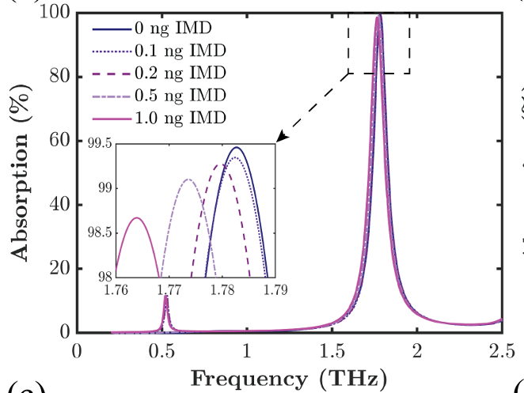
THz Metamaterial
Inverse designed terahertz sensors reaching 99.43% absorption for trace pesticide detection.
Explore →
Machine Learning & Deep Learning
Applied machine learning for solar forecasting, sequence models, and engineering optimization.
Explore →
Ab-initio DFT Calculation
First principles studies of optical properties in biomarkers and Janus 2D monolayers.
Explore →Projects
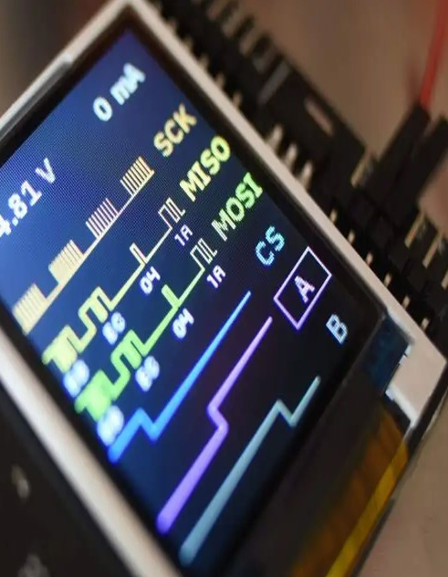
Design of an SPI Interface
2024
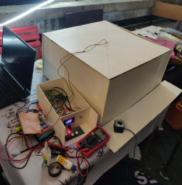
Radiation Pattern of a LED
2024
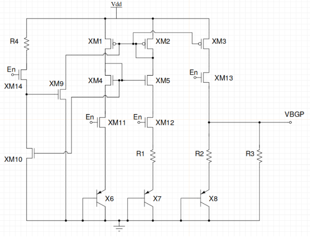
Low-Power Bandgap Reference Design with Opensource PDK
SKY130 (2024)
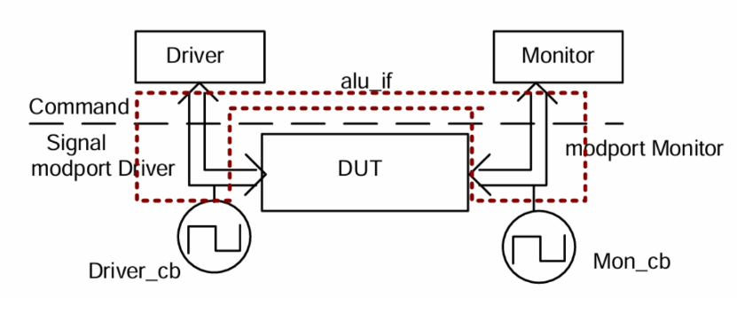
8-Bit ALU RTL to GDSII
2024
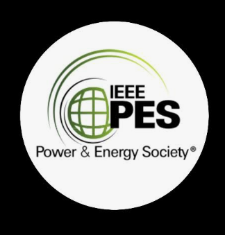
ML for GHI Forecasting
2021

CNN DNN Sequence Model
2021

Digital Cash Register
2022
CRC-16 CCITT Data Integrity Engine
Fault-Injection Verification
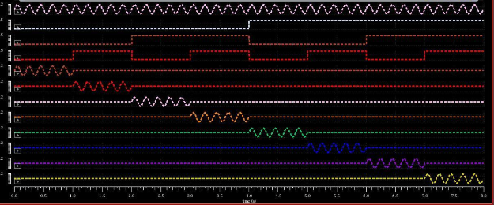
1:8 Analog De-multiplexer
MOSFETs (2023)
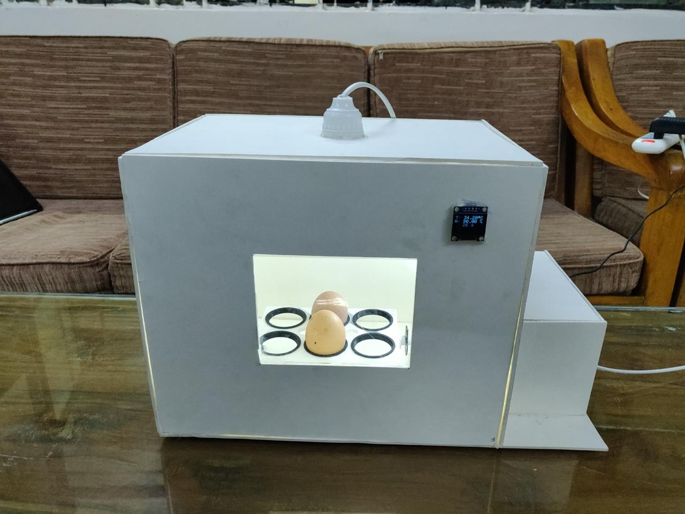
IoT Based Smart Egg Hatching
2023
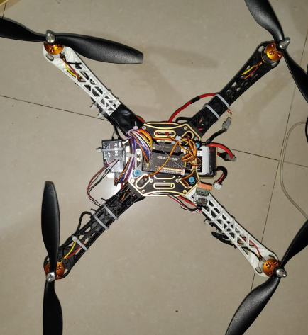
F450 Quadcopter
Ardupilot APM 2.8 (2019)
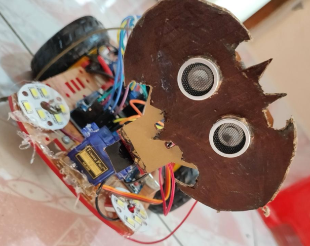
Voice-Controlled Robot
Arduino and HC-05 (2019)
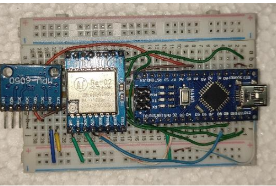
Gesture-Controlled Robot
Navigation System (2022)